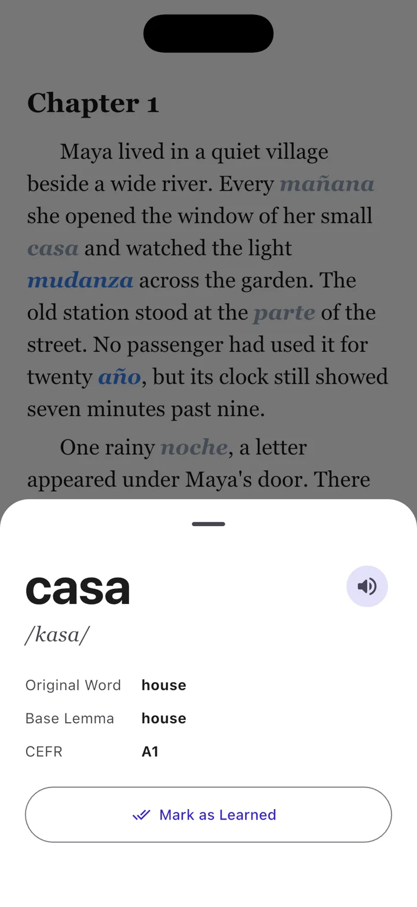

How Linguoteka Works
Linguoteka helps you practise vocabulary inside a story. Most of the text stays in a language you already understand, while selected words appear in the language you are learning.
1. Choose a book or a sample story
Start with a sample story in the app or import an EPUB or TXT file. Familiar subject matter makes it easier to follow the story while noticing new vocabulary. See the book import guide for file requirements.
2. Choose two languages
Set the reading language to match the book. Then choose a different learning language. English, Spanish, French, German, and Italian are supported. For example, use an English book to practise Spanish words.
Select your learning level and the amount of vocabulary to replace. Start small if the mixed text feels difficult to follow.
3. Read and tap a word
Try to infer an unfamiliar word from the sentence, then tap it to check the original meaning, pronunciation, and level. Continue reading without needing to open a separate dictionary.

4. Return to your vocabulary
Your vocabulary view separates learning and learned words. Use Quick Test to revisit vocabulary from your reading. Short, regular sessions give you opportunities to encounter words again.
Start free
The free app supports up to five books in your library at a time and includes ads. Pro removes advertising and the five-book limit. Check the app for current subscription offers.
Try a chapter with Linguoteka
Free to download for iOS and Android, with optional in-app purchases.